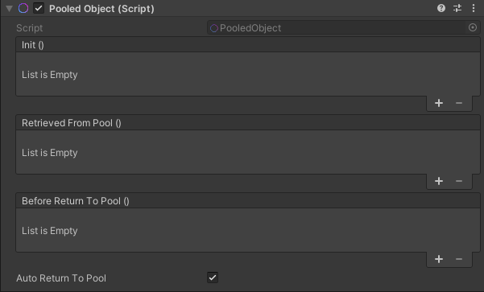
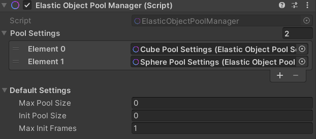
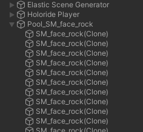
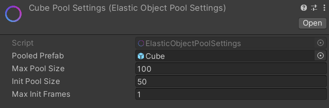

Object Pooling
Preceding chapters showed the intrinsic importance of Spawner setups to introduce game object data into an elastic experience. This page is going to introduce the idea of Object Pooling as a way to optimize these setups further, making it possible to handle large amounts of objects while mitigating the cost for object instantiation.
Pooling & Instantiation
The basic idea behind Object Pooling is to manage an amount of objects in pools that are associated with the object type. Instead of creating and destroying, objects are then retrieved from and returned back to the associated pools. In most cases this results in a much lower workload on the CPU for large object amounts, because of the pooling process saving the cost for frequent memory allocation.
In an elastic environment Object Pooling is not as straight forward as in a static environment. This is due to the fact that there is no sane way to estimate a fixed amount of objects that will be sufficient for all the features of an ever changing procedural environment. With respect to this situation the Elastic Object Pools of the Elastic SDK will dynamically grow as additional objects are required.
Pooled Object Setup
Most of the pooling process in the Elastic SDK is automated, which means that the user only has to determine which game objects are supposed to be pooled. This is done via the Pooled Object component that has to be added to the Unity Prefabs that should be part of the pooling process.

This is already enough to enable the pooling process for game objects that are created using Spawners of the Elastic SDK.
However, for more complex Prefabs one must understand that their instances' life-cycle is different when they live in pooling system. Most importantly, after the initial creation of the instance, they are not destroyed or re-created. But instead they will be enabled and disabled.
On a script level, this mean every functionality that is supposed to execute when a game object appears or disappears
should be called in Unity's OnEnable() and OnDisable() life-cycle calls.
To provide a no-code workflow, the Pooled Object component ships with 3 events that are exposed to the Unity editor. These events allow the user to add functionality that is executed whenever these events are invoked.
| Name | Type | Description |
|---|---|---|
| Init | UnityEvent | Invoked when object has been instantiated and initially added to the pool. This event can be used to invoke behavior that should exclusively happen when an instance of the poolable object is created. |
| Retrieved From Pool | UnityEvent | Invoked when object has been taken from pool. This event can be used to execute spawning behavior before the game object instance is set to its prefab's active state. |
| Before Return To Pool | UnityEvent | Invoked right before game object returns to pool. This event can be used to execute despawning behavior like animations or in general behavior that should happen outside of Unity's life cycle calls. |
Important
When retrieved from the associated pool, a game object's active state is automatically set to the active state of its prefab. Furthermore, when a game object has return to its pool, its active state is always set to false.
Additionally, the component has a Auto Return To Pool checkbox to disable the automated return process of the game
objects that fall outside of a Spawner's Moving Grid. This becomes important in cases where you want to fully execute an
exit process (e.g. an animation) before the game object returns to the pool and thus is disabled.
If this checkbox is disabled, the public
API PooledObject.ReturnToPool()
has to be called manually when the exit process concludes.
An example script to trigger entrance and exit animation via the Before Return To Pool event could look as follows:
using System.Collections;
using Holoride.ElasticSDK;
using UnityEngine;
public class PoolingAnimTester : MonoBehaviour
{
public float animTimer = 0.0f;
public float animDuration = 5.0f;
public PooledObject poolingComponent;
private void Start()
{
this.poolingComponent = this.GetComponent<PooledObject>();
}
public void StartAnimOut()
{
this.StopAllCoroutines();
this.StartCoroutine(this.AnimOut());
}
public void StartAnimIn()
{
this.StopAllCoroutines();
this.StartCoroutine(this.AnimIn());
}
private IEnumerator AnimOut()
{
var startPosition = this.transform.localPosition;
while (this.animTimer < this.animDuration)
{
this.animTimer += Time.deltaTime;
var animProgress = this.animTimer / this.animDuration;
this.transform.localPosition = Vector3.Lerp(startPosition, startPosition + Vector3.down * 3.0f, animProgress);
yield return null;
}
this.animTimer = 0.0f;
var returnStatus = this.poolingComponent.ReturnToPool();
}
private IEnumerator AnimIn()
{
var startPosition = this.transform.localPosition;
this.transform.localPosition = new Vector3(startPosition.x, -1.0f * 3.0f, startPosition.z);
while (this.animTimer < this.animDuration)
{
this.animTimer += Time.deltaTime;
var animProgress = this.animTimer / this.animDuration;
this.transform.localPosition = Vector3.Lerp(startPosition + Vector3.down * 3.0f, startPosition, animProgress);
yield return null;
}
this.animTimer = 0.0f;
}
}
Warning
Disabling the automated return process for pooled game objects can have a direct impact on the size of the associated pool.
This is because pools in the Elastic SDK grow dynamically when more game objects are needed than are available.
Depending on the duration of the delay until game objects return,
the number of cells in the Moving Grid and the speed of the player, the pools can grow rapidly.
Eventually, however, the size of the pool will converge to the player's maximum speed.
A suitable value for the Max Pool Size setting can be assigned to the individual pools to prevent excessive growth.
Elastic Object Pool Manager Setup
Besides the Pooled Object component that has to be added to the game object the user wants to be part of the pooling
process, there is also the Elastic Object Pool Manager component.
By default, this component resides on the Elastic Scene Generator Prefab and works out-of-the-box. However, when someone
where to remove it without removing the Pooled Object components from the Prefabs that are referenced on the Spawners of
the Elastic Graph system, the runtime environment of the Elastic SDK will throw a warning that these objects will not be
end up in a pool.

Note
We do not throw an exception here, so that a user can quickly test scenarios with and without pooling enabled without having to remove every Pooled Object component.
Only one Elastic Object Pool Manager component is required. This component will act as a provider for all Prefab pools.
Internally the pool objects are stored in a dictionary with the associated Prefab objects as keys.
In the scene hierarchy the pool game objects will be located at top-level and be name after the pattern:
Pool_<Prefab name>.

Note
It is not recommended to move the pool game objects into lower levels of the hierarchy. This is likely to cause an increasing amount of updating Pooled Object transforms messaging children and parents, whenever the Elastic SDK's world shift happens. For more information visit: Optimizing the Hierarchy
On the Elastic Object Pool Manager component you will also find 2 settings: Pool Settings and Default Settings.
While the Default Settings expose values that are used as fallback, the Pool Settings associate specific for individual pools to enable more granular control over the pooling behavior. Pool Settings are linked to the individual Prefab via a mandatory reference on the settings asset itself.

Adjustable settings are as follows:
| Setting | Type | Description |
|---|---|---|
| MaxPoolSize | int | The maximum amount of instances the spawning pool is going to create. Supports runtime change. Where 0 means unlimited. |
| InitPoolSize | int | The initial amount of instances the spawning pool is going to be instantiated with. |
| MaxInitFrames | int | The maximum amount of frames taken to instantiate initial spawning pool. Where 0 equals 1 frame to initialize all instances. |
Moving On
Congratulations, you have completed the World Creation learning track! For deeper insights into the ElasticSDK environment and its features consider proceeding with the following tracks:
- Code Learn how to integrate and extend the Elastic SDK API